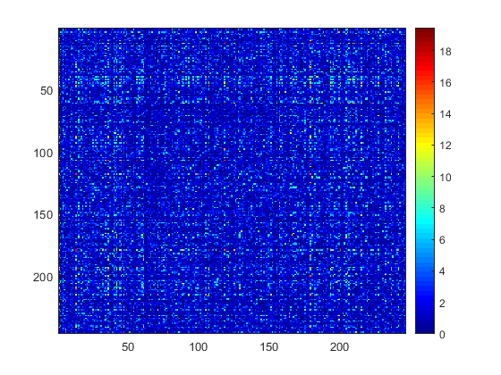
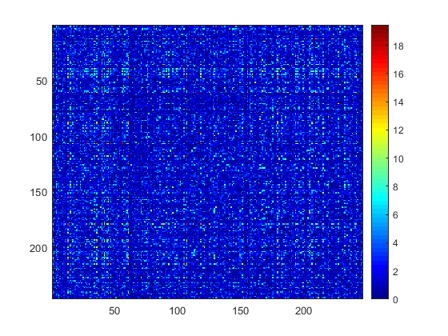

Contents
% Compare extracted subgraphs by greedy and adaptive greedy on Schizophrenia data % Extracted subgraphs are further refined to bipartite by Pard % Lambda in adaptive greedy is selected by itegrated likelihood
Print the raw data and do permutation
addpath('C:/Dropbox/dense'); load('edge_wise_res.mat'); figure;imagesc(W);colormap jet;colorbar;snapnow; n=size(W,1); perm_matrix = squareform(1:(n*(n-1)/2)); node_perm_idx = randperm(n); perm_matrix = perm_matrix(node_perm_idx,node_perm_idx); perm_vec = squareform(perm_matrix); [result ID]=sort(perm_vec); W_vec = squareform(W); W1_vec = W_vec(perm_vec); W1 = squareform(W1_vec); figure;imagesc(W1);colormap jet;colorbar;snapnow
 
 Use one step greedy_ad with parameter 1
[inlist outlist]=greedy_ad(W1,0.05,1);
W1_return = W1([inlist outlist],[inlist outlist]);
figure;imagesc(W1_return);colormap jet;colorbar;

Select lambda via integrated likelihood for binarized data with varied cutoff
then use greedy_ad and kpartite
r=[0.01 0.005 0.001]; rpmf0 = []; for i = 1:size(r,2) rpmf0(i) = 1/sum(W1(:)>-log(r(i))); end rpmf = rpmf0/sum(rpmf0); p0=0.05; lambda0=0.8:0.05:1.6; [inlist2 outlist2 max_lambda] = greedy_ad_blik(W1,lambda0, r, rpmf, p0); W1_return2 = W1([inlist2 outlist2],[inlist2 outlist2]); figure;imagesc(W1_return2);colormap jet;colorbar;